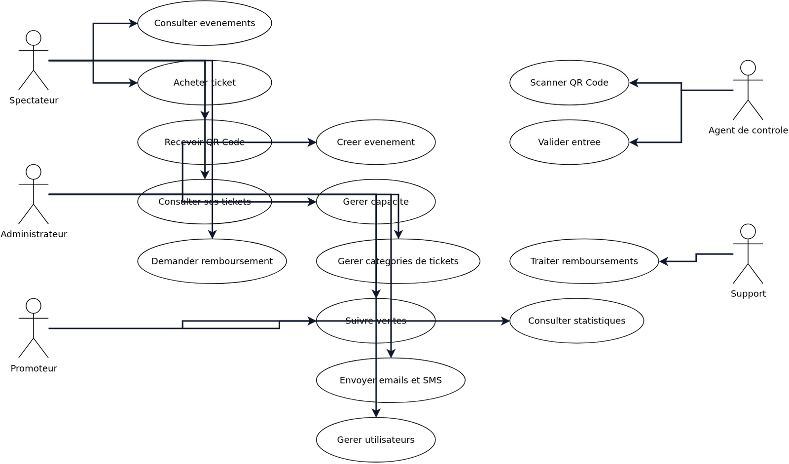
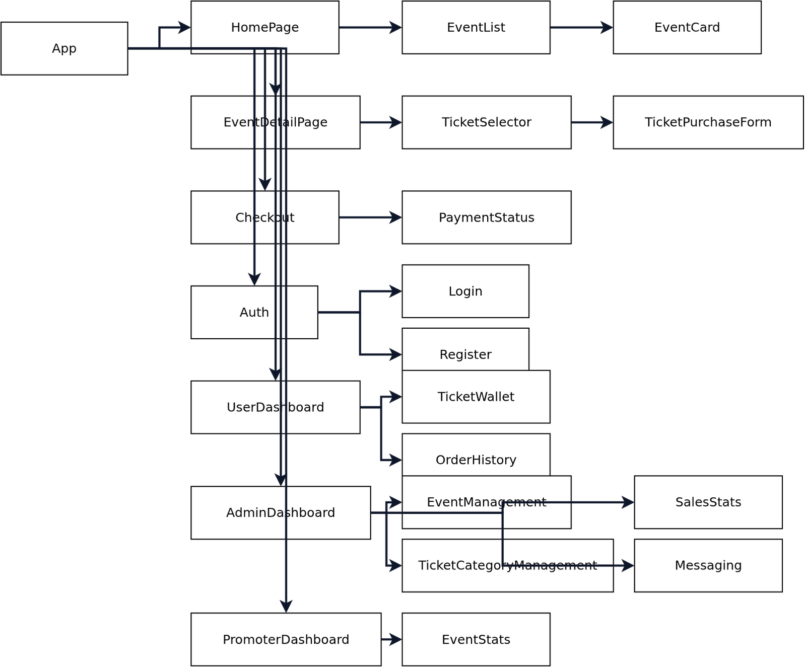
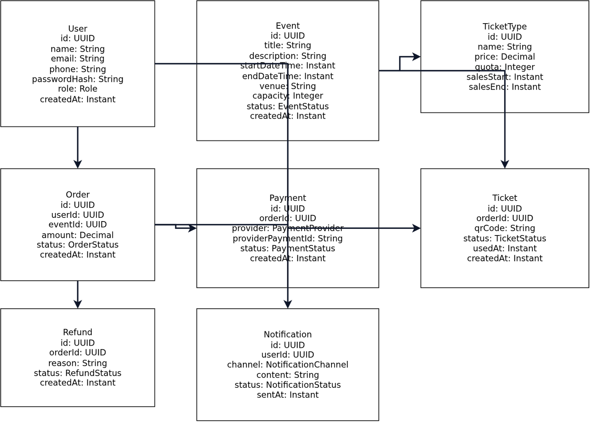
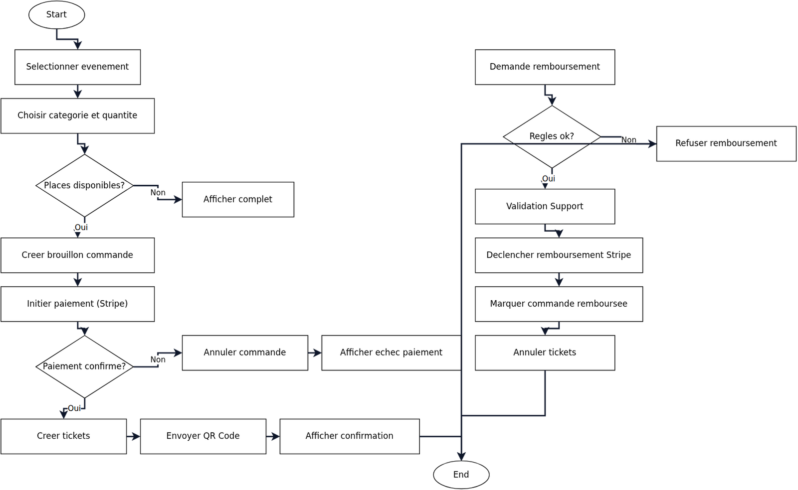

📘 CAHIER DES CHARGES – VERSION PREMIUM 2.0
Plateforme de Billetterie Digitale • Client : Palais de la Culture • Version 2.0 • Rédacteur : Daouda • Date : 2026
Technologies
Spring Boot, Next.js, PostgreSQL, Stripe, QR Code
Coordonnées
Palais de la Culture • Contact: admin@palaisculture.example
📑 Table des matières
- 1. Présentation générale
- 2. Objectifs du projet
- 3. Acteurs du système
- 4. Périmètre fonctionnel
- 5. Architecture globale
- 6. Modèle de données
- 7. Diagrammes UML
- 8. API REST – Spécifications
- 9. Exigences techniques
- 10. Sécurité & RGPD
- 11. Performance & Scalabilité
- 12. UX / UI – Exigences
- 13. Tests & Qualité
- 14. Exploitation & Maintenance
- 15. Planning & Roadmap
- 16. Conclusion
- 17. Annexes – Hypothèses
1. Présentation générale
Le Palais de la Culture souhaite moderniser son système de billetterie afin de proposer une plateforme digitale complète, sécurisée et évolutive. Cette solution doit permettre :
- la vente en ligne de tickets
- la gestion centralisée des événements
- la communication avec les promoteurs
- la collecte et l’analyse des données spectateurs
2. Objectifs du projet
2.1 Objectifs fonctionnels
- Digitaliser l’ensemble du processus d’achat
- Garantir l’unicité et la sécurité des tickets via QR Code
- Éviter toute survente grâce à un contrôle strict des capacités
- Offrir un tableau de bord complet aux administrateurs et promoteurs
- Faciliter la communication via email et SMS
2.2 Objectifs techniques
- Architecture scalable et modulaire
- API REST documentée (Swagger / OpenAPI)
- Sécurité avancée (JWT, RBAC, HTTPS)
- Base de données robuste et optimisée
3. Acteurs du système
- Spectateur : achète et utilise les tickets
- Administrateur : supervise la plateforme, gère les événements
- Promoteur : gère ses propres événements
- Agent de contrôle : vérifie les tickets à l’entrée
- Support : traite les incidents et remboursements
- Super Admin : configuration globale et gestion des droits
4. Périmètre fonctionnel
4.1 Spectateur
- Consultation des événements
- Achat de tickets
- Paiement sécurisé
- Réception du QR Code
- Historique des achats
- Demande de remboursement
4.2 Administrateur
- Création et gestion des événements
- Définition des capacités et quotas
- Suivi des ventes en temps réel
- Gestion des utilisateurs et promoteurs
- Campagnes email/SMS
- Tableau de bord avancé
4.3 Promoteur
- Consultation des statistiques
- Suivi des ventes
- Gestion limitée à ses événements
4.4 Agent de contrôle
- Scan QR Code
- Validation en temps réel
- Mode dégradé offline (liste locale)
4.5 Support
- Traitement des remboursements
- Gestion des litiges et réclamations
5. Architecture globale
5.1 Architecture technique
Backend – Spring Boot : Java 17, Spring Security (JWT), Spring Data JPA, PostgreSQL, Stripe (paiement), ZXing (QR Code), Mailjet / Twilio
Frontend – Next.js : React + TypeScript, App Router, TailwindCSS, JWT client-side, SSR/SSG pour performance
5.2 Architecture logique
Frontend (Next.js) → API REST Backend (Spring Boot) → Base PostgreSQL • Services externes : Stripe, Mailjet, Twilio
6. Modèle de données
6.1 Tables principales
- Users : id, name, email, phone, password, role, created_at
- Events : id, title, description, start_datetime, end_datetime, venue, capacity, promoter_id, status, created_at
- Tickets : id, order_id, qr_code, status, used_at, created_at
- Orders : id, user_id, event_id, amount, status, created_at
- Payments : id, order_id, provider, provider_payment_id, status, created_at
- Notifications : id, user_id, channel, content, status, sent_at
- Refunds : id, order_id, reason, status, created_at
7. Diagrammes UML
Cas d’utilisation, composants frontend, classes backend, séquence d’achat.
8. API REST – Spécifications
- Auth : POST /auth/login, POST /auth/register
- Events : GET /events, GET /events/{id}, POST /events, PUT /events/{id}, DELETE /events/{id}
- Orders & Tickets : POST /orders, GET /orders/{id}, GET /users/{id}/tickets
- Payments : POST /payments, POST /payments/webhook
- Refunds : POST /refunds, GET /refunds/{id}
- Admin / Promoteur : GET /admin/stats, POST /admin/notifications, GET /promoter/events/{id}/stats
9. Exigences techniques
- Architecture modulaire
- API documentée (Swagger)
- Gestion centralisée des erreurs
- Logs & monitoring
- Sauvegardes automatiques
- Environnements : dev / staging / prod
10. Sécurité & RGPD
- HTTPS obligatoire
- JWT + RBAC
- QR Code unique et signé
- Anti-survente (transactions atomiques)
- Consentement utilisateur
- Droit à l’oubli
- Journalisation des actions sensibles
11. Performance & Scalabilité
- Temps de réponse API < 2 secondes
- Support de pics à 5 000 utilisateurs simultanés
- Cache des événements (TTL configurable)
- Optimisation des requêtes SQL
12. UX / UI – Exigences
- Mobile first
- Parcours d’achat simplifié
- Accessibilité minimale (WCAG 2.1 AA)
- Interface moderne et intuitive
- Multilingue : FR / EN
13. Tests & Qualité
- Tests unitaires ≥ 70 %
- Tests d’intégration API
- Tests e2e (flux achat complet)
- Tests de charge (pics de vente)
14. Exploitation & Maintenance
- Monitoring : latence, taux d’erreur, conversions
- Alertes temps réel
- Logs consultables 30 jours
- Procédure de rollback
15. Planning & Roadmap
Phase 1 – Fondations : Authentification, Gestion utilisateurs, CRUD événements
Phase 2 – Vente : Paiement Stripe, Génération QR Code, Tickets
Phase 3 – Dashboards : Admin, Promoteur
Phase 4 – Communication : Email, SMS
16. Conclusion
Ce cahier des charges version 2.0 constitue une base complète et opérationnelle pour lancer la plateforme de billetterie digitale du Palais de la Culture.
17. Annexes – Hypothèses
- Pics de charge estimés : 5 000 utilisateurs simultanés
- Remboursement : possible jusqu’à 48h avant l’événement, traitement manuel
- Langues supportées : FR et EN
Annexe – Paramètres par défaut (SLA / RGPD)
- SLA API : p95 < 2s, p99 < 4s • Erreurs < 1%
- Capacité : pics de 5 000 utilisateurs simultanés
- Résilience : RPO 4h • RTO 2h • Sauvegardes quotidiennes
- Stripe : webhooks avec idempotence • 3 tentatives (exponentiel)
- RGPD : rétention 24 mois (achats) • 12 mois (logs) • export/suppression sur demande
- Accessibilité : conformité cible WCAG 2.1 AA
Annexe – Diagrammes
Cas d’utilisation

Acteurs et cas d’utilisation principaux.
Composants Frontend

Hiérarchie des vues et formulaires.
Diagramme de classes Backend

Entités, attributs clés et relations.
Diagramme d’activité – Achat & Remboursement

Flux d’achat avec paiement Stripe et process de remboursement.